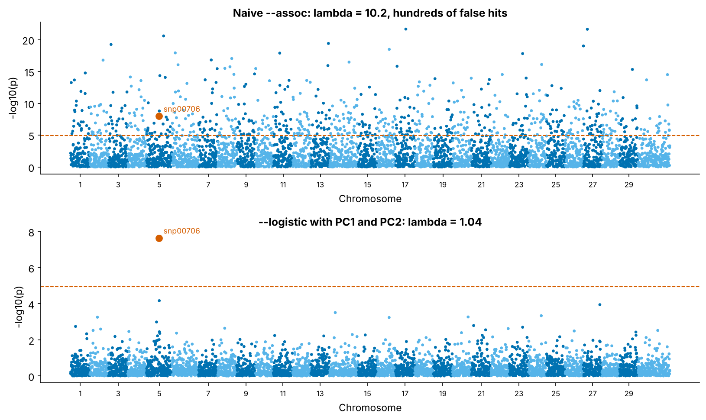
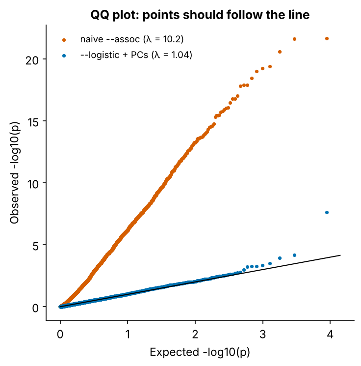
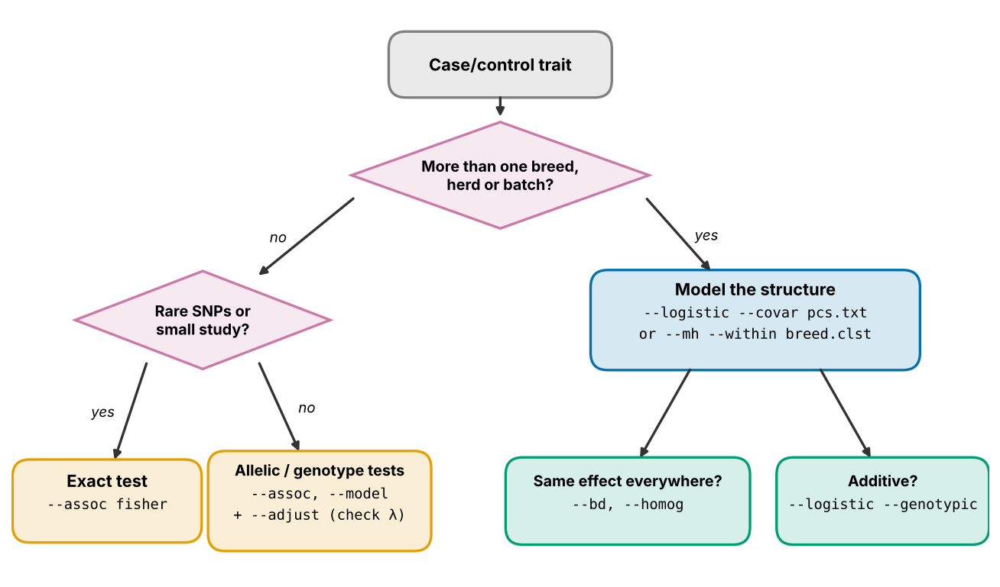

12 Case/control association
An association test asks a simple question at every SNP: is one allele more common in sick animals than in healthy ones? This chapter runs the basic tests, shows how breed differences can produce hundreds of false hits, and fixes them.
From here on we use the cleaned file cattle_qc (351 animals, 4,443 SNPs; Chapter 19 lists the QC steps). The disease is BRD: 138 cases and 213 controls. Every command starts with plink --bfile cattle_qc --cow --allow-no-sex.
12.1 Step 1: the allelic test
Count alleles in cases and controls and put them in a 2 × 2 table. For our true BRD SNP:
| A allele | C allele | Total | |
|---|---|---|---|
| Cases | 171 | 105 | 276 |
| Controls | 168 | 254 | 422 |
The A allele makes up 62% of case chromosomes but only 40% of control chromosomes. The chi-square test (1 degree of freedom) asks whether a difference that large could easily happen by chance. The odds ratio summarises the size of the effect:
\[ OR = \frac{171/105}{168/254} = 2.46 \]
The odds of carrying A are 2.46 times higher on a case chromosome than on a control chromosome.
plink --bfile cattle_qc --cow --allow-no-sex --assoc --adjust --out a_basic CHR SNP BP A1 F_A F_U A2 CHISQ P OR
17 snp02679 40026542 G 0.573 0.2123 T 94.72 2.189e-22 4.98
27 snp04131 8978640 A 0.1204 0.4765 G 94.61 2.317e-22 0.1504
5 snp00741 67004928 A 0.5221 0.1808 G 89.81 2.616e-21 4.951
...
5 snp00706 62019439 A 0.6196 0.3981 C 32.76 1.041e-08 2.462 (rank 238)
--adjust: Genomic inflation est. lambda (based on median chisq) = 10.1883.| Column | Meaning |
|---|---|
| A1, A2 | The tested allele and the other allele |
| F_A, F_U | Frequency of A1 in cases (affected) and controls (unaffected) |
| CHISQ, P | Test statistic and p-value |
| OR | Odds ratio for A1 (above 1: A1 more common in cases) |
Something is very wrong: hundreds of SNPs have p-values below 10⁻¹⁰, and the true BRD SNP is only 238th.
12.2 Step 2: spot stratification with λ, the Manhattan plot and the QQ plot
BRD is far more common in Holsteins (84 of 141) than in N’Dama (6 of 80). Any SNP whose frequency differs between those breeds therefore looks associated with BRD. This is population stratification, the most common cause of false positives in livestock studies.
The genomic inflation factor λ measures it. If almost no SNP is truly associated, the median chi-square across the genome should be 0.455 (the median of a chi-square with 1 degree of freedom):
\[ \lambda = \frac{\text{median}(\chi^2_{\text{observed}})}{0.455} \]
λ near 1.0 is healthy, above 1.05 to 1.1 deserves attention, and 10.2 is a disaster.


12.3 Step 3: correct for structure
The best fix is to include the population structure in the model. Logistic regression with the first two PCs from Chapter 11 as covariates:
plink --bfile cattle_qc --cow --allow-no-sex --logistic --covar pcs.txt --hide-covar --adjust --out lg_pc--adjust: Genomic inflation est. lambda (based on median chisq) = 1.03609.
CHR SNP BP A1 TEST NMISS OR STAT P
5 snp00706 62019439 A ADD 349 3.319 5.588 2.294e-08
5 snp00708 62070027 T ADD 351 0.4467 -3.984 6.768e-05
27 snp04234 39892997 T ADD 347 0.351 -3.862 0.0001126λ dropped from 10.19 to 1.04, the number of SNPs with p < 10⁻⁵ dropped from 679 to 1, and that one is the planted BRD SNP. Its neighbour snp00708 comes second only because it is in LD with it. The covariate file pcs.txt has a header line (FID IID PC1 PC2). --hide-covar hides the covariate lines so you see one line per SNP.
--adjust also writes corrected p-values (.adjusted):
| Column | Correction |
|---|---|
| GC | Genomic control: each chi-square divided by λ |
| BONF | Bonferroni: p × number of tests (strictest) |
| HOLM, SIDAK_SS, SIDAK_SD | Step-down and Šidák versions of Bonferroni |
| FDR_BH, FDR_BY | False discovery rate (Benjamini-Hochberg, Benjamini-Yekutieli) |
The file is sorted from the smallest p-value down; here are its first two lines:
CHR SNP UNADJ GC BONF HOLM SIDAK_SS SIDAK_SD FDR_BH FDR_BY
5 snp00706 2.294e-08 4.018e-08 0.0001018 0.0001018 0.0001018 0.0001018 0.0001018 0.0009139
5 snp00708 6.768e-05 9.067e-05 0.3004 0.3003 0.2595 0.2594 0.1502 1Read each column as “the p-value after this correction”: compare it with 0.05. snp00706 stays significant under every correction (Bonferroni: 2.29 × 10⁻⁸ × 4,439 tests = 1.0 × 10⁻⁴). Its neighbour snp00708 is significant before correction (6.8 × 10⁻⁵) but not after any (Bonferroni 0.30, FDR_BH 0.15). Bonferroni, Holm and Šidák control the chance of even one false positive and are strict; FDR_BH controls the expected share of false positives among the hits and is gentler, which suits screening many SNPs. GC divides each chi-square by λ, so it only makes sense when λ is close to 1 and the inflation is spread evenly. Note that these corrections treat the SNPs as independent; with SNPs in LD they are conservative, which is why permutation (Chapter 13) gives a sharper genome-wide threshold.
12.4 Step 4: other tests for the same question
12.4.1 Fisher’s exact test
The chi-square test is an approximation that becomes unreliable when a table cell has fewer than about 5 counts (rare SNPs, small studies). Fisher’s exact test computes the exact probability:
plink --bfile cattle_qc --cow --allow-no-sex --assoc fisher --out a_fisherFor snp00706 it gave p = 1.36 × 10⁻⁸, close to the chi-square’s 1.04 × 10⁻⁸, because the counts are large.
12.4.2 Genotype models: trend, dominant, recessive and general
The allelic test counts alleles. --model counts animals by genotype and asks several questions at once:
| Test | Question | df |
|---|---|---|
| ALLELIC | Do allele frequencies differ? | 1 |
| TREND (Cochran-Armitage) | Does risk rise steadily from aa to Aa to AA? (does not assume HWE) | 1 |
| DOM | Does carrying at least one A matter (AA + Aa vs aa)? | 1 |
| REC | Does carrying two copies matter (AA vs Aa + aa)? | 1 |
| GENO (general) | Do the three genotype groups differ in any way? | 2 |
plink --bfile cattle_qc --cow --allow-no-sex --model --out m_all CHR SNP A1 A2 TEST AFF UNAFF CHISQ DF P
5 snp00706 A C GENO 50/71/17 32/104/75 32.91 2 7.14e-08
5 snp00706 A C TREND 171/105 168/254 32.88 1 9.783e-09
5 snp00706 A C ALLELIC 171/105 168/254 32.76 1 1.041e-08
5 snp00706 A C DOM 121/17 136/75 23.19 1 1.471e-06
5 snp00706 A C REC 50/88 32/179 20.6 1 5.665e-06Read AFF 50/71/17 as: among cases, 50 AA, 71 AC and 17 CC. TREND and ALLELIC are strongest, which fits an additive effect (each copy of A adds the same amount of risk), and that is how the SNP was simulated. GENO, DOM and REC are only computed when every cell has at least 5 animals; --cell 0 removes that rule.
12.4.3 Model comparison: is the effect additive?
--logistic --genotypic fits two terms per SNP: ADD (0, 1 or 2 copies of A1) and DOMDEV (1 for heterozygotes, 0 otherwise). DOMDEV measures how far the heterozygote is from halfway between the two homozygotes.
plink --bfile cattle_qc --cow --allow-no-sex --logistic --covar pcs.txt --genotypic --out lg_geno 5 snp00706 62019439 A ADD 349 3.325 5.573 2.505e-08
5 snp00706 62019439 A DOMDEV 349 1.026 0.09652 0.9231
5 snp00706 62019439 A GENO_2DF 349 NA 31.19 1.688e-07DOMDEV p = 0.92: no sign of dominance, so the simpler additive model is right. The fitted dominant and recessive models were weaker (p = 7.5 × 10⁻⁶ and 3.3 × 10⁻⁶).
One SNP in this run reported OR = inf with p = 3.6 × 10⁻¹⁰³. An infinite odds ratio means one genotype appears only in cases or only in controls (“complete separation”), and the regression breaks. Always look at the genotype counts (--model) before believing such a result.
12.4.4 Stratified tests: Cochran-Mantel-Haenszel and Breslow-Day
Instead of a regression, you can split animals into strata (breeds) and combine the 2 × 2 tables:
plink --bfile cattle_qc --cow --allow-no-sex --mh --within breed.clst --out mh
plink --bfile cattle_qc --cow --allow-no-sex --bd --within breed.clst --out bd
plink --bfile cattle_qc --cow --allow-no-sex --homog --within breed.clst --out homogThe CMH test asks whether there is an association within strata and gives one common OR: for snp00706, OR = 2.92 (95% CI 2.01 to 4.25), p = 9.9 × 10⁻⁹, with λ = 1.03. The Breslow-Day test asks whether the OR is the same in every stratum (p = 0.59, so yes). --homog shows each breed:
| Breed | Case freq of A | Control freq of A | OR | p |
|---|---|---|---|---|
| Angus | 0.75 | 0.55 | 2.44 | 0.012 |
| Holstein | 0.56 | 0.32 | 2.69 | 0.00023 |
| N’Dama | 0.71 | 0.38 | 4.08 | 0.00054 |
| Heterogeneity test | 0.60 |
The same allele raises the risk in all three breeds.
12.5 Which test should I use?

Each box of the figure as a command on the cleaned data, with the result for the BRD SNP snp00706 from the sections above:
# one breed, rare SNPs or a small study: exact test
plink --bfile cattle_qc --cow --allow-no-sex --assoc fisher --out a_fisher # p = 1.4e-08
# one breed, common SNPs: allelic and genotype tests, and check lambda
plink --bfile cattle_qc --cow --allow-no-sex --model --out m_all # TREND p = 9.8e-09
plink --bfile cattle_qc --cow --allow-no-sex --assoc --adjust --out a_basic # lambda = 10.19 here!
# several breeds: model the structure
plink --bfile cattle_qc --cow --allow-no-sex --logistic --covar pcs.txt --hide-covar --adjust --out lg_pc # p = 2.3e-08, lambda 1.04
plink --bfile cattle_qc --cow --allow-no-sex --mh --within breed.clst --out mh # p = 9.9e-09
# then: same effect in every breed? additive?
plink --bfile cattle_qc --cow --allow-no-sex --bd --within breed.clst --out bd # Breslow-Day p = 0.59
plink --bfile cattle_qc --cow --allow-no-sex --logistic --covar pcs.txt --genotypic --out lg_geno # DOMDEV p = 0.92Our data have three breeds, so the right-hand branch applies; the λ of 10.19 from the plain --assoc is the warning sign that sends you there.
One command, --glm, replaces --assoc, --model, --logistic and --linear; it picks logistic or linear regression from the phenotype. firth-fallback uses Firth regression for rare SNPs, which handles complete separation. --mh, --bd, --homog and --model are not in PLINK 2.0.
plink2 --bfile cattle_qc --cow --glm hide-covar firth-fallback --covar pcs.txt --adjust --out glm_brdIt gave the same answer: snp00706, OR 3.319, p = 2.29 × 10⁻⁸, λ = 1.04.
12.6 Exercises
Try each question first, then open the answer. The challenge goes a step further than the chapter.
1. With --assoc and no covariates, how many SNPs have p < 10⁻⁵? With --logistic and pcs.txt?
679 without correction (λ = 10.19) against 1 with two PCs (λ = 1.04): the planted BRD SNP, snp00706.
Challenge. Use 10 PCs instead of 2 as covariates. What happens to λ and to the p-value of snp00706? Are more PCs always better?
plink --bfile cattle_qc --cow --extract qc_prune.prune.in --pca 10 --out p10
awk '{printf "%s %s", $1, $2; for (i = 3; i <= 12; i++) printf " %s", $i; print ""}' p10.eigenvec > pc10.txt
plink --bfile cattle_qc --cow --allow-no-sex --logistic --covar pc10.txt --hide-covar --adjust --out a10λ fell to 1.00, and snp00706 is still first, but its p-value weakened from 2.3 × 10⁻⁸ to 2.0 × 10⁻⁷. Extra PCs cost degrees of freedom, and they can absorb part of a true signal if it is correlated with breed. Use the scree plot and λ to choose: enough PCs to remove the stratification, but no more.